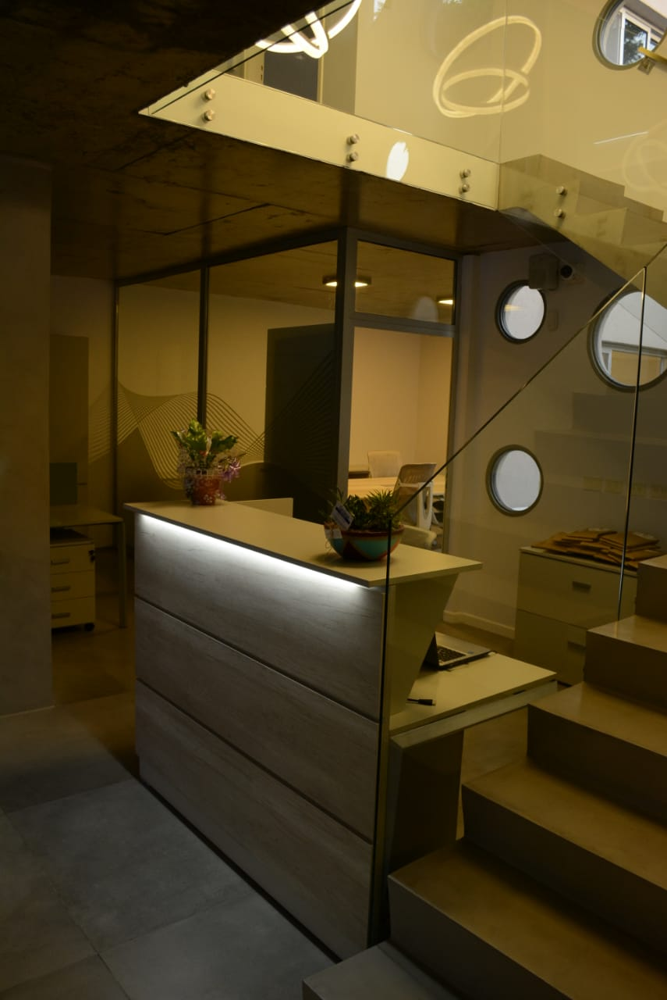
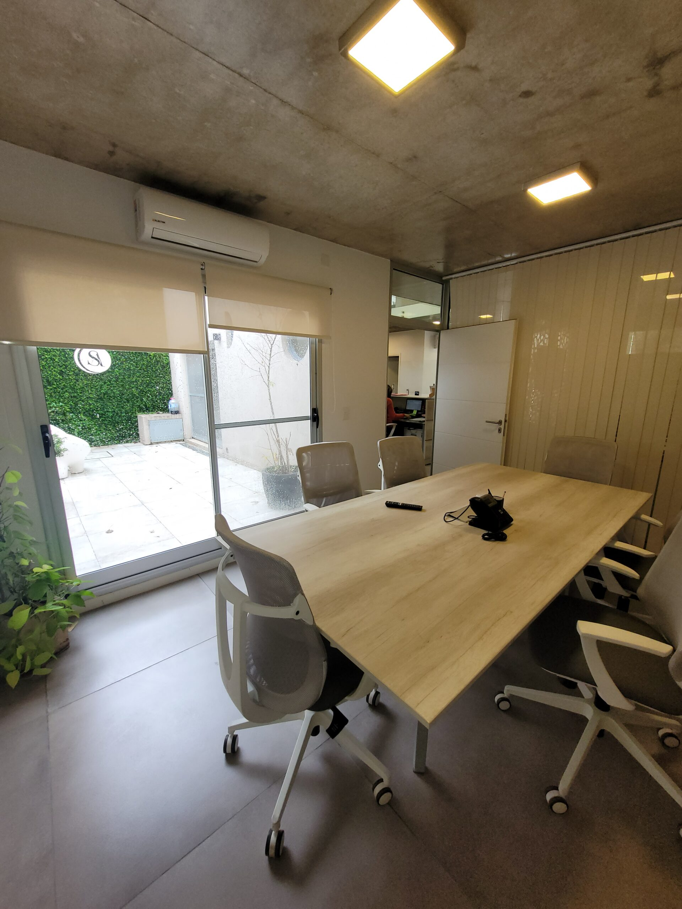

Estudio Santarsiere
Incorporar slogan del estudio
Con un fuerte compromiso hacia la excelencia profesional y humana, Yanina Santarsiere inició su ejercicio profesional en 2008, abriendo las puertas de su estudio jurídico. Desde el primer día, ha puesto en primer plano los intereses y necesidades de sus clientes, apoyándose en pilares fundamentales como la capacitación constante, la dedicación, el compromiso y la responsabilidad. Su objetivo es brindar un asesoramiento jurídico sólido, ágil y adaptable, asegurando siempre la mejor respuesta ante cada desafío.
El estudio promulga el buen clima laboral de los profesionales que integran el equipo de trabajo, fija objetivos concretos, basados en la autonomía y libertad, a los fines de maximizar la calidad profesional.
La esencia del staff “Santarsiere Abogados” es asesorar y defender leal y diligentemente, los derechos de cada cliente, con experiencia, compromiso y fiabilidad, sumando las habilidades necesarias, a los fines de prestar los servicios legales con calidad, responsabilidad y estricto apego a las normas morales.